Se encuentra en el municipio de Ezequiel Montes. Es conocido por su clima agradable, calles coloridas y gran riqueza cultural.
La Peña de Bernal es su principal atractivo turístico y recibe miles de visitantes cada año.
Bernal es un Pueblo Mágico de Querétaro famoso por la Peña de Bernal, uno de los monolitos más grandes del mundo.
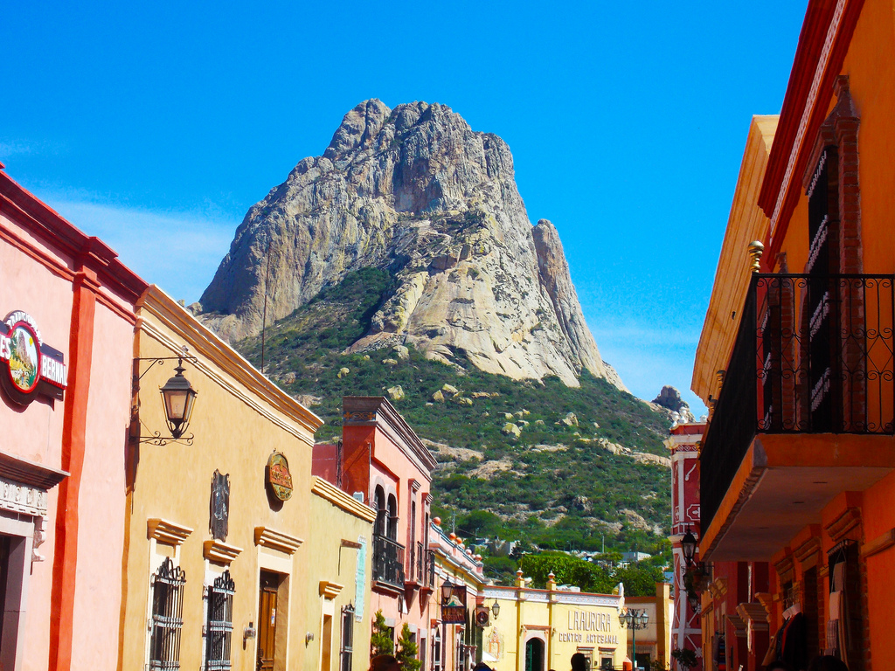
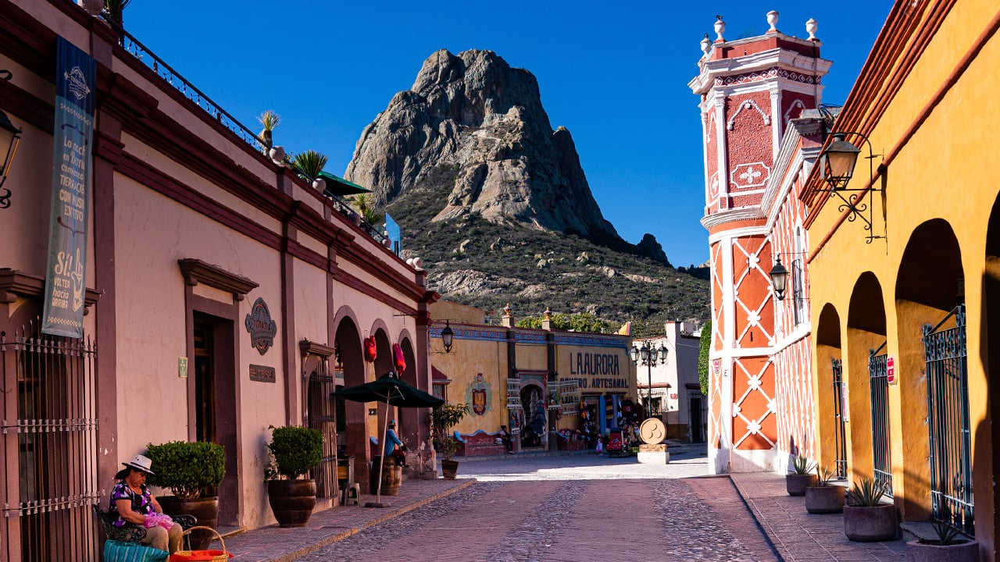
Se encuentra en el municipio de Ezequiel Montes. Es conocido por su clima agradable, calles coloridas y gran riqueza cultural.
La Peña de Bernal es su principal atractivo turístico y recibe miles de visitantes cada año.
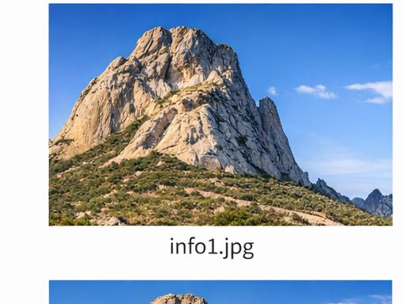
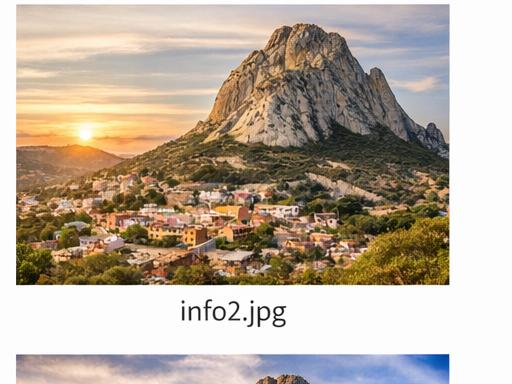
Monolito gigante con vistas impresionantes.
Calles empedradas y artesanías típicas.
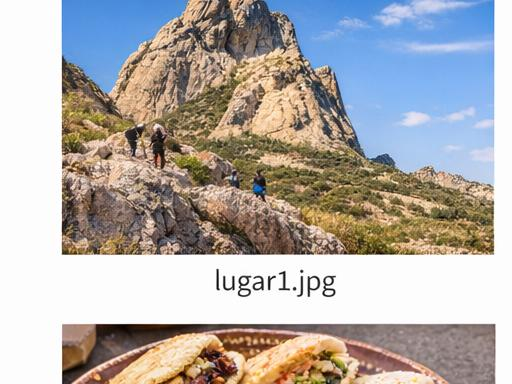
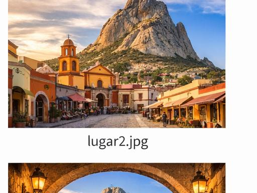
Destacan las gorditas, nopales, quesos y dulces típicos.
También cuenta con fiestas tradicionales y artesanías.
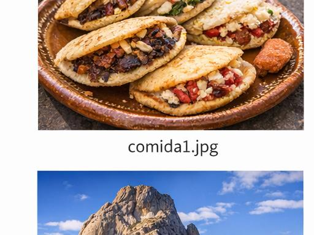
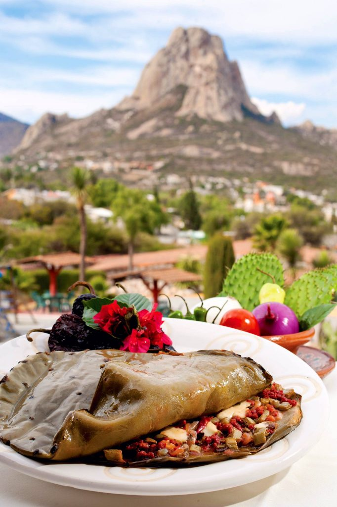
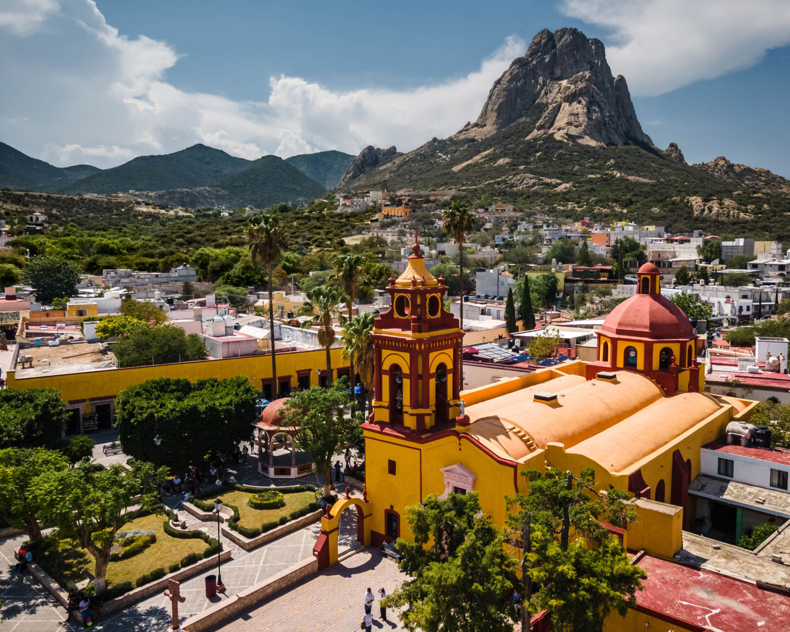
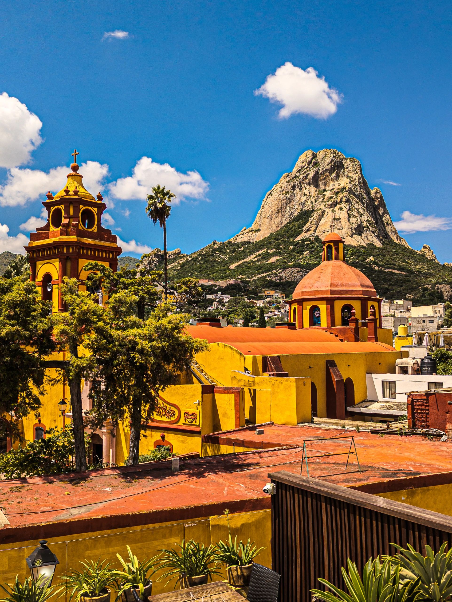
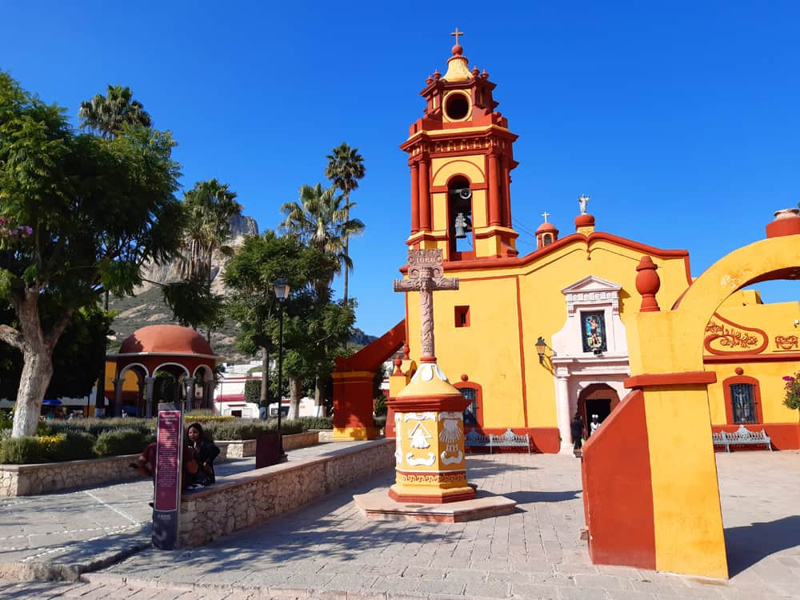
Bernal es un destino ideal para conocer la cultura mexicana y disfrutar de paisajes únicos.